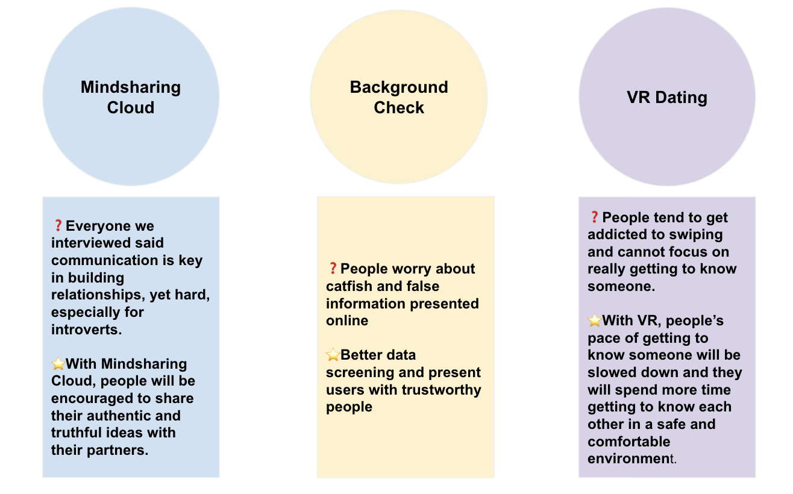
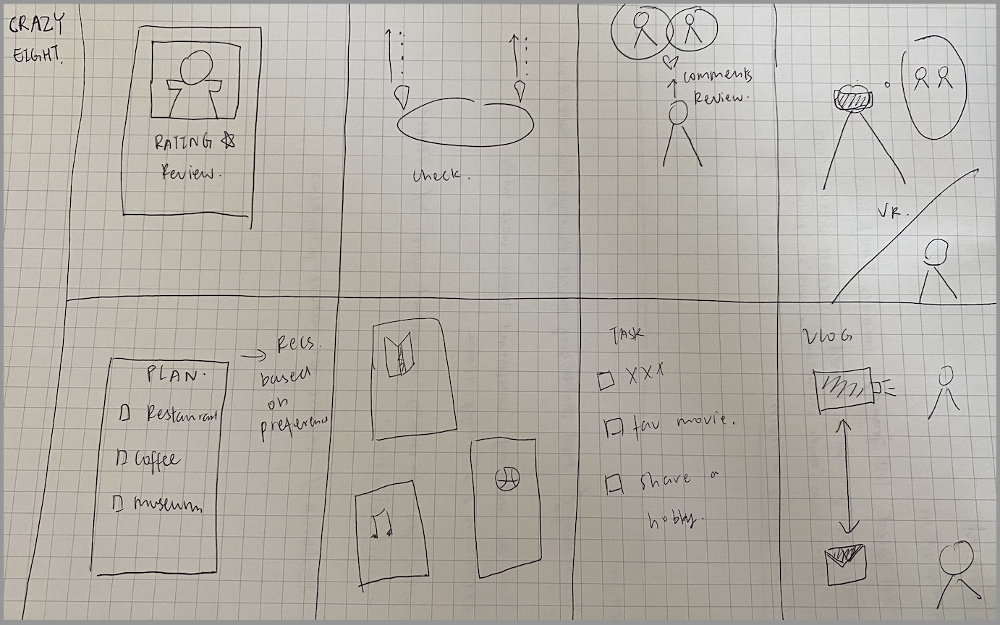
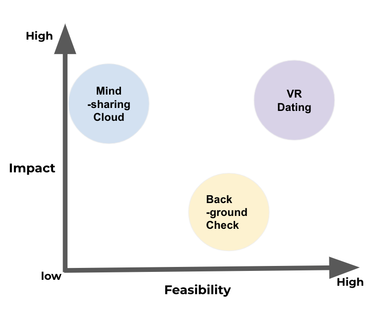
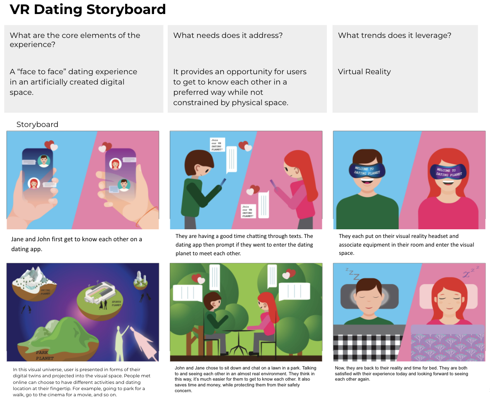
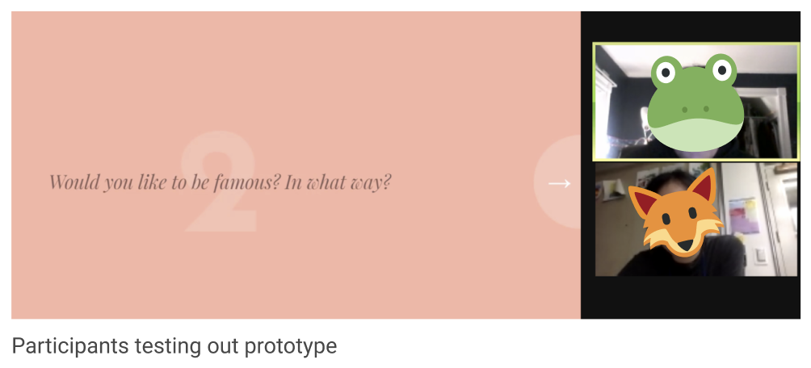
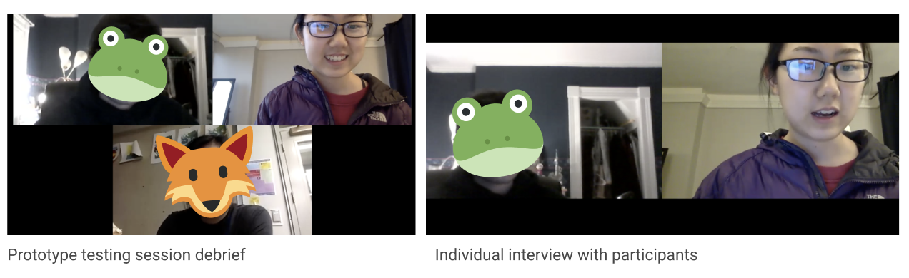

Fall 2020 | University of Pennsylvania
Teammates: Yuran Liu, Tong Kong, Yitong Zhang
In the design thinking class I took at UPenn, we were given an open ended task to envision the future of connection. After brainstorming different types of connections, our team decided to focus on dating, which stemmed from our frustration with the current dating app experiences and eagerness for finding a better way to be connected with other people.
🌟 Key Problem: How might we foster meaningful communication and relationship through online dating?I was mainly responsible for desining and conducting interviews in the background research phase as well as prototyping phase. Throughout the whole process, my team worked closely together to brainstorm, disucss, design and present our ideas to other people from the research phase, to ideation phase and to prototyping phase.
Phase 1: Research 🔧 Academic Journal | Interview | News
Our team conducted literature reviews on dating and relationships as well as
articles on current dating apps. I conducted 6 semi-structured interviews
with people who have different dating app experience -- from people who have
never used dating apps to those who are currently using dating apps to those who met
their partner through dating apps and to those who used dating apps
but stopped using them.
🌟 Phase 1 Key Results
We found people have the need to connect with others and form deep relationships.
More people are using dating apps to meet people outside of their social network.
The reasons people are concerned about using dating apps are:
1. a lack of trust in strangers, 2. time consuming,
3. connections through dating apps are transient and shallow.
Phase 2: Brainstorm and Define 🔧 Crazy 8 | Impact-Feasibility Matrix | Storyboard
In the brainstorming phase,
each of the team members brainstormed ideas using Crazy Eight
and three final ideas tackling different phases of dating was selected
for further evaluation:


We decided to focus on VR dating for this project
because it will have a bigger impact on the online dating
experince and at the same time it is a more feasible idea given
the current technological development.

Then my teammate Yuran visualized our idea using a storyboard and her amazing graphic skills.

🌟 Phase 2 Key Results
After evaluating different ideas, we decided to focus on VR dating
based on impact and feasibility analysis. A storyboard
is created to help us ideate detailed features of the experience and convey our envisioned ideas.
Phase 3: Prototyping
Based on the three key features of the VR dating experience we identified
(1. An experience that requires attention and focus,
2. Dating in a safe and comfortable environment
3. Availability of system provided activities and games)
and our goal of understanding how people feel about meeting up with a
stranger through such a system, I designed a prototype using Zoom as the medium of
meet-ups. To prototype the games and activities provided on the VR platform,
I gathered games that participants can play together online, including Scribble,
Boggle and New York Times 36 questions to fall in love etc.
I conducted three prototype testing sessions with six participants. During the sessions, I muted my video and audio, acted as the voice assistance of the system and observed the interaction of the participants. After the session, I conducted interviews separately with each of the participants to gather their feedback on the prototype and their experience.
 
🌟 Phase 3 Key Results
In the prototyping phase, I gathered feedback for the VR dating
experience and ways to improve the prototype for future iterations.